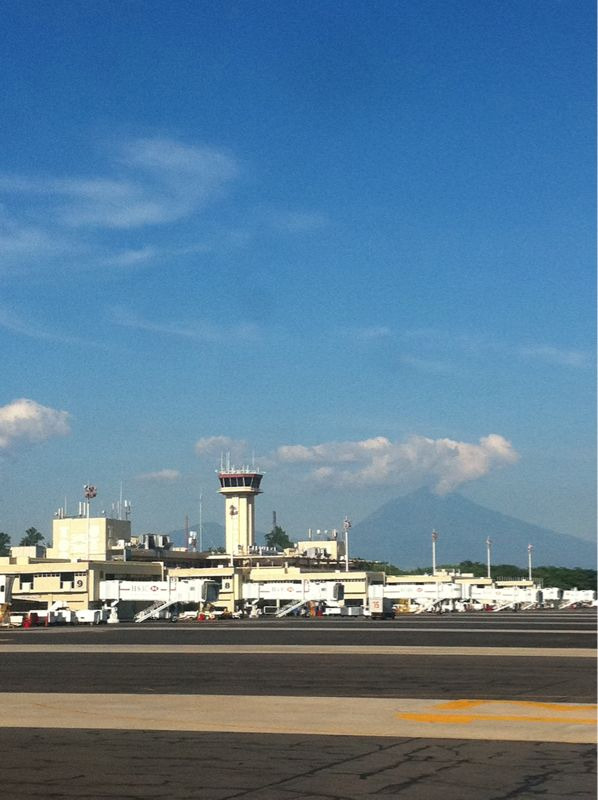

Thu, 14 Oct 2010 05:10:16 · airport · el salvador · san salvador · travel · city
view of comalapa international airport or el

View of Comalapa International Airport or El Salvador International Airport, which is located about 50 km (30 miles) from San Salvador in El Salvador.
It was built in the late 1970s to replace its predecessor, Ilopango International Airport, which is now used for military and charter aviation.
With 2,076,258 passengers in 2008, it was the fourth busiest airport by passenger traffic in Central America.